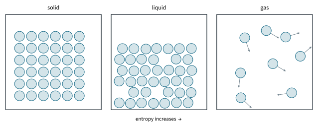
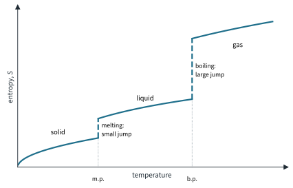
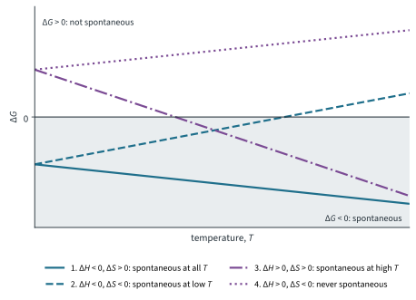
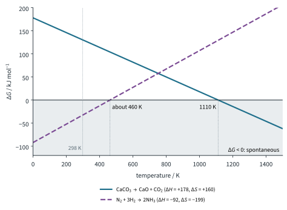

Chemical Energetics 3
Topic 7 · Chemical Energetics Part 3
On this page
Exothermic reactions are common, so it is tempting to think that a reaction goes because it gives out energy. But ice melts on a warm day, ammonium nitrate dissolves in water and gets cold, and, once it is hot enough, calcium carbonate decomposes: all endothermic, all happening by themselves. ΔH cannot be the whole story. The missing piece is entropy.
Entropy
Left to themselves, things become more disordered: a drop of ink spreads through water, the smell of perfume fills a room, a pack of cards that is shuffled never comes out in order. Each happens simply because there are far more disordered arrangements than ordered ones. In the same way, a change in which the entropy increases (ΔS positive) is favoured.
Note that entropy is measured in joules, not kilojoules, per kelvin per mole. Keep this in mind when you combine it with ΔH, which is in kJ mol−1.
What changes the entropy
These are the factors you need; the syllabus asks for a qualitative treatment only.
1. Change of state
In a solid the particles sit in fixed positions in a regular lattice and can only vibrate. In a liquid they move past one another, and in a gas they move freely and randomly through the whole container (Fig 1). So S(solid) < S(liquid) < S(gas), and the jump from liquid to gas is much the largest: the gas particles spread into a volume about a thousand times larger, so the number of ways of arranging them rises enormously.

2. Temperature
Heating a substance gives its particles more energy. They move and vibrate more, and there are more ways of sharing out the larger amount of energy among them, so entropy increases with temperature. At the melting point and the boiling point the entropy jumps without any change in temperature (Fig 2).

3. Number of particles, especially gas particles
The more particles there are, the more ways they can be arranged. So a reaction that increases the number of moles of gas has a large positive ΔS, and one that decreases it has a large negative ΔS. Because gases have so much more entropy than solids and liquids, the change in the number of moles of gas usually decides the sign of ΔS for a reaction.
4. Dissolving and mixing
Mixing two substances, or dissolving a solid in a liquid, usually increases the entropy: the particles are spread through a larger volume and mixed at random. (Beyond the syllabus. It does not always: ions in water hold a shell of water molecules in an ordered arrangement around them. For small or highly charged ions, such as Mg2+ and Al3+, this ordering can outweigh the spreading, and ΔS for dissolving can be negative. Dissolving a gas in water also decreases the entropy, because the gas particles lose their freedom.)
Predicting the sign of ΔS
Work through these in order and stop as soon as one gives a clear answer:
- Count the moles of gas on each side. More moles of gas formed: ΔS positive. Fewer: ΔS negative.
- If the moles of gas do not change, look at the states: solid → liquid → gas, or a solid dissolving, means ΔS positive; the reverse, negative.
- Then count all the particles: more particles, ΔS positive.
| Change | Sign of ΔS | Reason |
|---|---|---|
| H2O(l) → H2O(g) | positive | liquid to gas |
| H2O(s) → H2O(l) | positive | solid to liquid (a smaller increase) |
| CaCO3(s) → CaO(s) + CO2(g) | positive | 0 → 1 mol of gas |
| Mg(s) + 2HCl(aq) → MgCl2(aq) + H2(g) | positive | 0 → 1 mol of gas |
| NH4NO3(s) + aq → NH4+(aq) + NO3−(aq) | positive | solid dissolves; 1 → 2 particles |
| N2(g) + 3H2(g) → 2NH3(g) | negative | 4 → 2 mol of gas |
| NH3(g) + HCl(g) → NH4Cl(s) | negative | 2 → 0 mol of gas |
| 2H2(g) + O2(g) → 2H2O(l) | negative | 3 → 0 mol of gas |
| Ag+(aq) + Cl−(aq) → AgCl(s) | negative | ions in solution form a solid |
| water cooled from 80 °C to 20 °C | negative | lower temperature |
Gibbs free energy
Whether a change happens by itself depends on both ΔH and ΔS, and on the temperature. They are combined in the Gibbs free energy change, ΔG. (The ΔH⦵ and ΔS⦵ values in this Part are literature values; the Data Booklet has none.)
ΔG⦵ = ΔH⦵ − TΔS⦵
where T is the temperature in kelvin.1 For a reaction under standard conditions:
- If ΔG⦵ is negative, the reaction is spontaneous (energetically feasible): it can happen by itself, without a continuous supply of energy from outside.
- If ΔG⦵ is positive, the reaction is not spontaneous; the reverse reaction is.
- If ΔG⦵ = 0, neither direction is favoured: the system is at equilibrium (as ice and water are at 273 K).
"Spontaneous" has a special meaning here. It says nothing about speed: a spontaneous reaction may be extremely slow (see the limitations below).
Worked example 1
For CaCO3(s) → CaO(s) + CO2(g), ΔH⦵ = +178 kJ mol−1 (Part 2) and ΔS⦵ = +160 J K−1 mol−1. Is the decomposition spontaneous at 298 K?
(Convert ΔS first: +160 J K−1 mol−1 = +0.160 kJ K−1 mol−1.)
ΔG⦵ = 178 − 298 × 0.160 = 178 − 47.7 = +130 kJ mol−1
ΔG⦵ is positive, so the decomposition is not spontaneous at 298 K. Limestone does not fall apart on the shelf. The entropy change is favourable (a gas forms), but at room temperature TΔS is too small to outweigh the large positive ΔH.
Worked example 2
Dissolving ammonium nitrate: ΔH⦵ = +25.7 kJ mol−1 (Part 1), ΔS⦵ = +109 J K−1 mol−1. Explain why it dissolves at 298 K although the change is endothermic.
ΔG⦵ = 25.7 − 298 × 0.109 = 25.7 − 32.5 = −6.8 kJ mol−1
ΔG⦵ is negative, so the dissolving is spontaneous. The large increase in entropy (an ordered lattice becomes ions spread at random through the water) makes TΔS bigger than ΔH. This is an entropy-driven change; the same argument answers the question at the end of Part 2 about NaCl.
Worked example 3
For H2O(s) → H2O(l), ΔH⦵ = +6.01 kJ mol−1 and ΔS⦵ = +22.0 J K−1 mol−1. Find ΔG at 263 K, 273 K and 283 K.
| T / K | TΔS / kJ mol−1 | ΔG = ΔH − TΔS / kJ mol−1 | Ice melts? |
|---|---|---|---|
| 263 (−10 °C) | 263 × 0.0220 = 5.79 | 6.01 − 5.79 = +0.22 | no |
| 273 (0 °C) | 273 × 0.0220 = 6.01 | 6.01 − 6.01 = 0 | ice and water at equilibrium |
| 283 (+10 °C) | 283 × 0.0220 = 6.23 | 6.01 − 6.23 = −0.22 | yes |
The model gets the melting point of ice right: ΔG = 0 at T = ΔH / ΔS = 6.01 / 0.0220 = 273 K.
The effect of temperature on spontaneity
Treat ΔH and ΔS as constant. Then ΔG = ΔH − TΔS is a straight line against T, starting at ΔH when T = 0, with slope −ΔS. Raising the temperature makes the −TΔS term more important. There are four cases (Fig 3):
| ΔH | ΔS | ΔG = ΔH − TΔS | Spontaneous? | Example |
|---|---|---|---|---|
| negative | positive | always negative | at all temperatures | 2H2O2(l) → 2H2O(l) + O2(g) |
| negative | negative | negative when TΔS is small | at low temperatures (below ΔH/ΔS) | N2 + 3H2 → 2NH3 |
| positive | positive | negative when TΔS is large | at high temperatures (above ΔH/ΔS) | CaCO3 → CaO + CO2; ice melting |
| positive | negative | always positive | never | 3O2(g) → 2O3(g) |

When ΔH and ΔS have the same sign, the reaction changes from spontaneous to not spontaneous (or the other way) at the temperature where ΔG = 0:
T = ΔH / ΔS (with ΔS in kJ K−1 mol−1)
Worked example 4
Above what temperature is the decomposition of calcium carbonate spontaneous?
T = ΔH / ΔS = 178 / 0.160 = 1112.5 K, so above about 1110 K (about 840 °C)
Industrial lime kilns heat limestone to about 900 to 1000 °C (about 1200 K), in line with this estimate; Topic 5 Part 3 lists about 900 °C for CaCO3.2
Worked example 5
For N2(g) + 3H2(g) → 2NH3(g), ΔH⦵ = −92 kJ mol−1 and ΔS⦵ = −199 J K−1 mol−1. (a) Is the reaction spontaneous at 298 K? (b) Above what temperature does it stop being spontaneous?
(a) ΔG⦵ = −92 − 298 × (−0.199) = −92 + 59.3 = −32.7, so −33 kJ mol−1 (2 s.f., as ΔH): spontaneous
(b) T = ΔH / ΔS = (−92) / (−0.199) = 462 K, so about 460 K
Both signs are negative, so the reaction is spontaneous only below about 460 K (Fig 4). Yet the Haber process runs at about 700 K, where ΔG⦵ = −92 + 700 × 0.199 = +47 kJ mol−1: not spontaneous under standard conditions. At 298 K the reaction is spontaneous but far too slow, so the plant runs hot (with an iron catalyst) for a usable rate, and uses high pressure and recycles the unreacted gases to still get a useful yield (Topic 8, and Topic 9 for the equilibrium).

Limitations of using ΔG to predict spontaneity
ΔG⦵ tells you whether a reaction can happen. It does not tell you that it will happen in a useful time, and it has to be read with care:
- ΔG says nothing about the rate. A spontaneous reaction may have such a high activation energy that it is too slow to notice (a kinetic barrier). Diamond turning into graphite has ΔG⦵ = −2.9 kJ mol−1 at 298 K (ΔH = −1.9 kJ mol−1, ΔS = +3.3 J K−1 mol−1), but diamonds last for ever. Methane and oxygen do not react until a spark supplies the activation energy, and hydrogen peroxide decomposes only slowly until a catalyst such as MnO2 is added.
- ΔG⦵ applies only to standard conditions: 1 bar for each gas and 1 mol dm−3 for each solution. Under other pressures and concentrations ΔG is different, so a reaction with a small positive ΔG⦵ may still go partly, and one with a small negative ΔG⦵ may not go to completion (Topic 9).
- ΔH and ΔS change with temperature, and a change of state (a reactant melting or boiling) changes them a lot. Values measured at 298 K give only an estimate of ΔG at other temperatures, and of the temperature at which ΔG = 0.
Summary
| Idea | Key point |
|---|---|
| Entropy | Disorder: the number of ways of arranging the particles and their energy; J K−1 mol−1. |
| Entropy increases | solid → liquid → gas (largest on boiling); higher temperature; more particles, especially more moles of gas; dissolving and mixing (usually). |
| Sign of ΔS | Count moles of gas first, then states, then particles. |
| Gibbs free energy | ΔG⦵ = ΔH⦵ − TΔS⦵; T in K; ΔS ÷ 1000. |
| Spontaneous | ΔG⦵ negative. Positive: not spontaneous. Zero: equilibrium. |
| Temperature | Same signs of ΔH and ΔS: changeover at T = ΔH / ΔS. −ΔH, +ΔS: always; +ΔH, −ΔS: never. |
| Limitations | No information about rate (Ea); standard conditions only; ΔH and ΔS vary with T. |
Additional information
- The ⦵ means standard conditions, but the equation can be used at other temperatures too, with ΔH and ΔS assumed not to change (see the limitations). ↩
- The temperature at which CaCO3 is seen to decompose depends on the pressure of CO2 above it. T = ΔH / ΔS gives the temperature at which the CO2 pressure reaches 1 bar, using values for 298 K; real ΔH and ΔS change a little with temperature. ↩